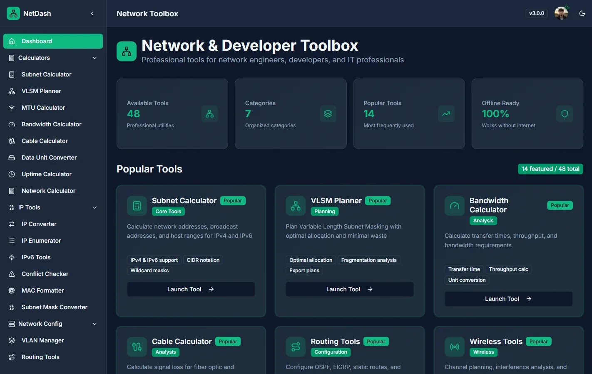

PROJECTS
Things I've built, end to end.
Apps real people use, systems work that goes down to the machine code, and an independent research paper, each one shipped and documented. Open any project for the full story.
012026Actively maintained
ShreyaDesk AI
Indian equity research, with execution guardrails
ShreyaDesk AI brings Indian equity research, technical scans, paper trading, and guarded live execution into one local dashboard. A React/Vite frontend works with a Python/FastAPI backend, cached NSE daily history, and Zerodha Kite Connect. OCC, RSI, Supertrend, SMA, and confirmed 3D workflows support research; account-ownership checks, persistent loss limits, order caps, and a kill switch guard execution. Live trading starts paused and must be explicitly enabled.
ReactViteJavaScriptPythonFastAPISQLiteKite ConnectPlaywright
022026Actively maintained
Satellite Crop Health Scanner
Pixel-level crop health from Sentinel-2 imagery
Satellite Crop Health Scanner converts aligned Sentinel-2 Level-2A B04 and B08 GeoTIFF bands into pixel-level NDVI analysis. It validates the full raster grid, handles invalid pixels safely, classifies vegetation with adjustable thresholds, and presents maps, distributions, and summary statistics. Results can be exported as a presentation-ready PNG, statistics CSV, or georeferenced NDVI GeoTIFF.
PythonStreamlitNumPyRasterioGeoTIFFMatplotlib
2Sentinel-2 bands3export formats
crop-health-scanner.streamlit.app

032024Actively maintained
FinancialFlow
Income, budgets, and goals in one clear view
FinancialFlow brings income, expenses, category budgets, and savings goals into one personal finance dashboard. Transactions update balances and monthly summaries, while interactive line, bar, doughnut, and radar charts reveal spending patterns and financial progress. Built with Next.js and TypeScript, it saves data in browser local storage so users can return to their records without creating an account.
Next.jsTypeScriptReactChart.jsFramer MotionTailwind CSS
RESEARCH
Most students never write a research paper unaffiliated with any institution. I did: preregistered, reproducible end to end, with a real DOI.
Independent research·2026
When Semantic Caches Lie
Independent research, sole author · 21 pages
Why one similarity threshold cannot make an LLM cache both safe and useful across domains. A preregistered, fully reproducible study, written, run, and typeset solo.
Read the case study ↗MORE WORK
www.axelot.io

Axelot
2025
Conflict-free real-time docs for developers
Collaborative two-person build
A real-time collaborative writing platform where developers co-edit rich technical documents with live cursors, AI assistance, and one-click publishing.
Case study ↗
netdash-toolkit.vercel.app/

Netdash
2025
40+ network tools in one app
A cross-platform network engineering workbench: 40+ tools, RFC-correct IP math in the browser, and a native Electron backend for real ping, traceroute, and port scanning.
Case study ↗
KnifeThrow
2022
An arcade game, no engine, pure Java
A complete 2D knife-throwing arcade game built from scratch on raw Java Swing/AWT, with a hand-rolled game loop, collision, particles, sound, and a persistent shop.
Case study ↗